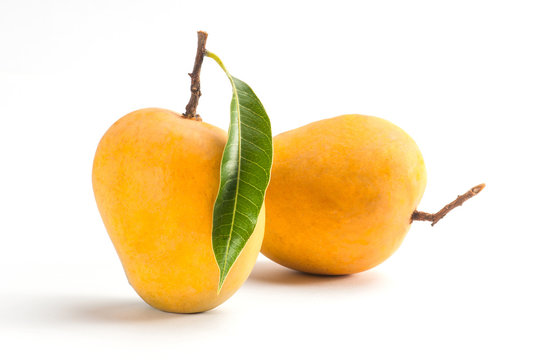
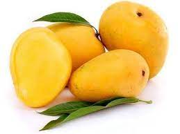

The Alphonso mango is a seasonal fruit harvested from mid-April through the end of June. The time from flowering to harvest is about 90 days, while the time from harvest to ripening is about 15 days. The fruits generally weigh between 150 and 300 grams (5.3 and 10.6 oz), have a rich, creamy, tender texture and delicate, non-fibrous, juicy pulp. As the fruit matures, the skin of an Alphonso mango turns golden-yellow with a tinge of red across the top of the fruit.

Banginapalli
Banganapalle mangoes (also known as Benishan and Bernisha) is a mango variety produced in Banganapalle of Nandyal District in the Indian state of Andhra Pradesh. It alone occupies 70% percent of total mango cultivable area of the state and was first introduced by the Farmers of Banaganapalli. It was registered as one of the geographical indication from Andhra Pradesh on 3 May 2017, under horticultural products by Geographical Indication Registry. It is also grown in the other parts of India and Pakistan. The fruit is described as obliquely oval in shape, around 20cm in length, with yellow flesh and a thin, smooth yellow skin. The flesh is of a firm, meaty texture and is sweet and lacks fibre. The cultivar is the most sought after in Andhra Pradesh. It is a very late-season variety that is good for canning. This cultivar is a source of vitamin A & C and is also called king of Mangoes.

Kesar
The 'Gir Kesar' mango, also called Kesar, is a mango cultivar grown in the foothills of Girnar in Gujarat, western India. The mango is known for its bright orange colored pulp and was given the geographical indication status in 2011. The biggest market of Gir Kesar is in Talala Gir (45 km from Gir national park) known as a Mango Market Yard.